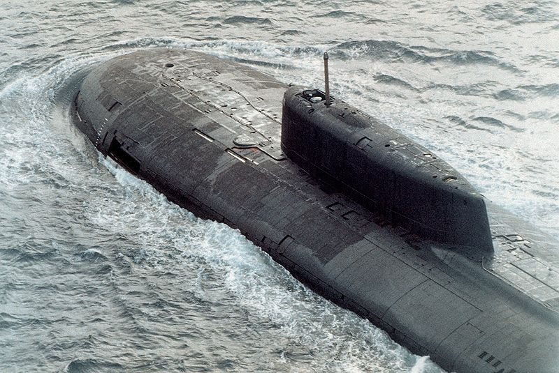
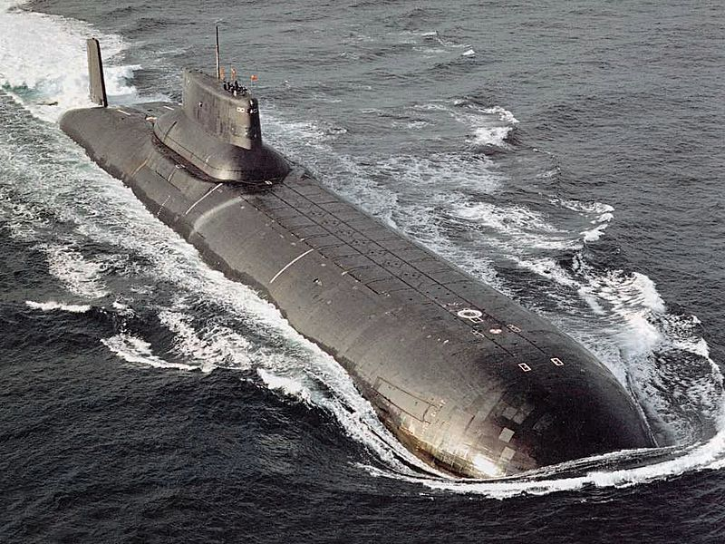

Submarins de la guerra freda

| Nom | Propulsió | Torpedes | Missils |
|---|---|---|---|

Alfa |
1 x OK-550 o 1 x BM-40A ( 40000 cv ) | 18 del tipus Type 53 20 del tipus VA-111 Shkval |
18 del tipus SS-N-15 Starfish |
|

Oscar II |
2 x OK-650 ( 98000 cv ) | 28 del tipus Type 53 28 del tipus Type 65 28 del tipus VA-111 Shkval |
28 del tipus SS-N-15 Starfish 28 del tipus SS-N-16 Stallion 24 del tipus P-700 Granit |
|

Typhoon |
2 x OK-650 ( 99200 cv ) | 28 del tipus Type 53 28 del tipus VA-111 Shkval |
28 del tipus SS-N-15 Starfish 28 del tipus SS-N-16 Stallion 20 del tipus SS-N-20 Sturgeon |
| Unitats total plantejades: 34 | Unitats total construides: 27 | ||